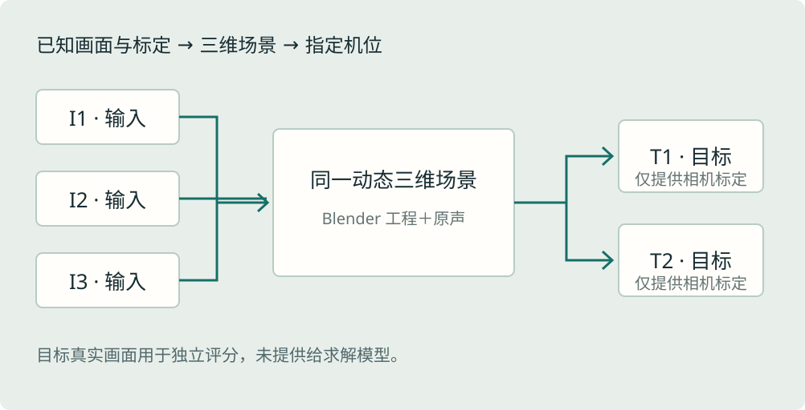
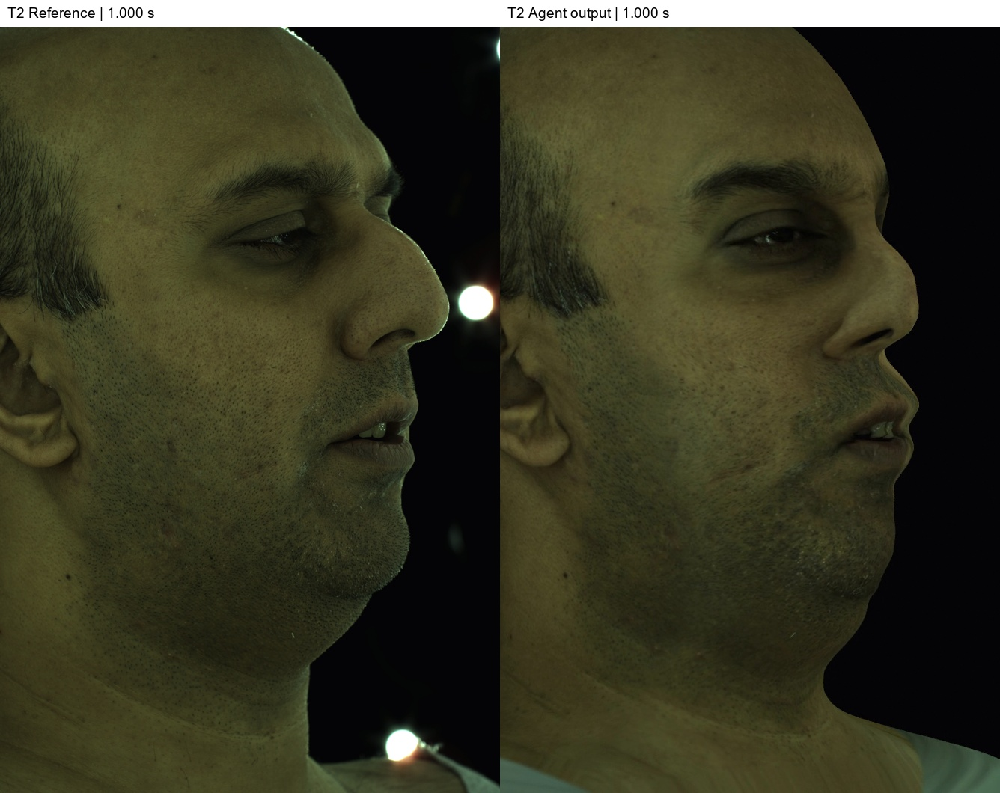
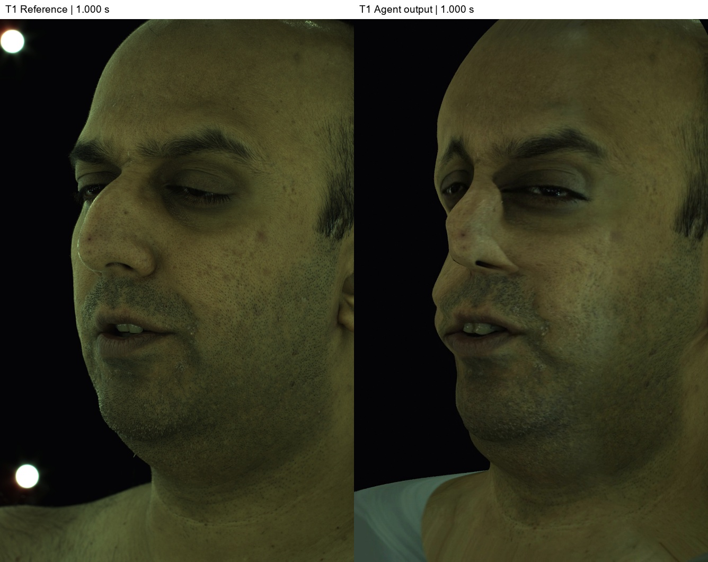

多视角动态场景重建
给出同一段说话的三路同步画面和原声，模型需要在 Blender 中重建完整动态三维场景，补出两个指定机位的有声视频，并交付可继续编辑的工程。
01任务定义
输入材料与机位 ↗
- 题目背景
- 工作室保存了一段说话的三个同步机位和原声，需要补出另外两个机位的拍摄画面，并保留后续可以继续使用的三维工程。
- 需要做的事
- 依据提供的素材，在 Blender 中重建镜头覆盖的完整动态三维场景，复现说话过程，按给定的 T1、T2 相机输出有声视频；两支成片由同一可编辑场景渲染。
- 提供的文件
views/I1、views/I2、views/I3：三个同步机位的原始PNG序列、帧时间清单和预览视频，各104帧、30 fps。cameras.json：三个输入机位及两个目标机位的标定和时间信息。speech.wav：48 kHz单声道原声，约3.47秒。
- 要求交付
scene.blend、T1.mp4、T2.mp4、可复现入口、资源和README。视频为668×1024、30 fps、H.264/AAC，帧数与素材一致；工程及资源可独立重开和重渲染。
任务 prompt 与任务委托
任务 prompt
完成candidate/TASK.md中的工作委托，实际制作并交付submission/中的成果。candidate/为只读输入，scratch/用于中间文件，submission/用于最终交付。使用提供的工具自主完成任务。最多240次工具调用，无墙钟时限。任务委托
# 委托：重建拍摄场景，补出两个指定机位
工作室保存了一段说话的三个同步机位和原声，希望补出另外两个机位的拍摄画面，并保留后续可以继续使用的三维工程。
请依据提供的素材，在Blender中重建镜头覆盖的完整动态三维场景，复现这段说话，按照`cameras.json`中的`T1`、`T2`机位各输出一支带原声的视频。成片应保留原说话的完整时间轴、画面内容和整体观感；两支视频应由同一个可编辑的三维场景渲染。
## 提供素材
- `views/I1`、`views/I2`、`views/I3`：三个同步机位的PNG序列、帧时间清单和预览视频；各104帧、30fps，原图1334×2048。
- `cameras.json`：输入机位与目标机位的标定及时间信息。
- `speech.wav`：48kHz单声道原声。
## 交付要求
将以下内容写入`submission/`：
```text
scene.blend
T1.mp4
T2.mp4
build.py # 或等效的可复现入口
assets/
README.md
```
视频规格为668×1024、30fps、H.264/AAC，帧数与素材一致，采用指定机位及原声。工程及资源应能够独立重开和重渲染；README说明构建与重渲染命令及依赖。
仅使用随题素材和提供的工具。环境提供CPU、Python/NumPy/Pillow、FFmpeg/ffprobe及后台Blender5.3，无GUI和普通互联网。
本题难点
- 从有限视角确定三维形状。输入视角中的纹理与轮廓，需要在未提供画面的目标机位仍然成立。
- 在连续说话中保持同一场景。逐帧几何、纹理、运动与原声需要在统一时间轴上保持对应。
- 把正确的相机与内容落实到交付。模型既要按标定渲染完整画面，还要交出能继续编辑和重渲染的工程。
02评分标准
评分细节 ↗总得分 · 满分100
视觉保真度50＋场景要素还原度40＋音画同步10
1. 视觉保真度 · 50分
在两个目标机位上，逐帧对照原始参考与最终视频，评价完整人物及背景。四项各12.5分，再对两机位等权平均。
| 指标 | 评价内容 | 计分方式 |
|---|---|---|
| PSNR ↑ | 像素还原 | 12.5 × clip(PSNR / 40) |
| SSIM ↑ | 结构相似 | 12.5 × clip(SSIM) |
| LPIPS ↓ | 感知外观差异 | 12.5 × clip(1 − LPIPS) |
| 视频JOD ↑ | 视频整体感知质量 | 12.5 × clip(JOD / 10) |
clip将数值限制在0–1。相同帧号直接比较，不额外配准、裁切、调色或移动时间轴。
2. 场景要素还原度 · 40分
八个维度各5分。主评模型对照原片与成片，逐帧评价以下39个小项。
| 维度 | 检查小项 | 计分方式 |
|---|---|---|
| 眼 | 位置与形状眼内结构睁闭变化可见性与遮挡表面完整性 | 5 × 1分 |
| 耳 | 位置与可见性外轮廓内部结构连接与遮挡表面完整性 | 5 × 1分 |
| 鼻 | 关键位置形状与比例侧面轮廓鼻孔与遮挡表面完整性 | 5 × 1分 |
| 口 | 唇形与位置开合变化接触与遮挡表面完整性 | 4 × 1.25分 |
| 眉 | 位置与间距形状与走向外观动态附着完整性与遮挡 | 5 × 1分 |
| 脸部轮廓完整性 | 整体轮廓区域完整性局部形状表面连续性动态一致性 | 5 × 1分 |
| 肩部 | 存在与覆盖轮廓与比例颈肩连接外观与明暗时序稳定性 | 5 × 1分 |
| 背景 | 底色与布局亮点数量与排列亮点位置亮点外观遮挡与时序 | 5 × 1分 |
每项按可判定帧的通过比例计分，再等权平均两机位；参考不可观察或判断不确定的帧排除。各小项的具体判定见评分细节。
3. 音画同步 · 10分
使用SyncNet评价嘴部变化与实际输出语音的匹配，以原片配原声和静止口型配原声作为参照。采用零偏移距离计分，并用人工错时对照验证检测有效性。
总分为上述三项之和。工程可重开性、三维结构及重渲染一致性单独核查并说明，不影响数值成绩。
03测试结果
成绩详情与运行配置 ↗| 模型 | 推理强度 | 框架 | 视觉 / 50 | 场景要素 / 40 | 音画同步 / 10 | 总分 / 100 |
|---|---|---|---|---|---|---|
| gpt-6.2-sol | xhigh | Codex | 30.18 | 13.90 | 9.35 | 53.44 |
| gpt-6.2-astra | xhigh | Codex | 30.80 | 14.98 | 9.67 | 55.45 |
| deepseek-v4-pro | max | Codex | 24.49 | 8.25 | 9.10 | 41.84 |
| gpt-6-astra | xhigh | Codex | 32.25 | 17.84 | 8.76 | 58.85 |
模型结果
约23分钟 · 103次工具调用
目标原片 · 求解时不可见
gpt-6.2-sol · xhigh · 重建成片
原片静音，仅重建片播放声音。
目标原片 · 求解时不可见
gpt-6.2-sol · xhigh · 重建成片
原片静音，仅重建片播放声音。
左为目标原片的网页预览，右为模型实际交付。评分使用原始无损参考帧；声音只从重建片播放。
已交付动态三维工程、两支有声视频及可复现入口；工程独立重开与六帧重渲染通过。
场景要素分项
| 维度 | 得分 |
|---|---|
| 眼 | 1.24 / 5 |
| 耳 | 2.35 / 5 |
| 鼻 | 1.00 / 5 |
| 口 | 3.46 / 5 |
| 眉 | 1.69 / 5 |
| 脸部轮廓完整性 | 2.97 / 5 |
| 肩部 | 1.08 / 5 |
| 背景 | 0.12 / 5 |
04执行过程
关键执行证据 ↗gpt-6.2-sol以xhigh运行，通过代码调用Python、FFmpeg与后台Blender完成制作。
05失败分析
结合原片、实际交付视频与工程核查，分析当前所选模型的还原偏差。
1. 鼻部几何与眼部外观仍存在明显偏差
鼻部得到1.00／5分，眼部1.24／5分。鼻梁和鼻尖的突出程度不足，眼裂形状、可见范围与部分开合状态也与原片不同。
详细分析
共享网格提供了三维深度，但稀疏特征和轮廓约束没有充分确定局部形状；投影纹理可以保留颜色，仍无法补偿错误的表面几何。

2. 肩部与背景的恢复弱于人物表面的连续性
脸部轮廓完整性得到2.97／5分，肩部1.08／5分、背景0.12／5分。成片有连续人物表面，但衣领范围、肩线和颜色分布偏离参考，背景主要亮点未恢复。
详细分析
本题要求重建镜头覆盖的完整场景。工程中有肩部和近似椅背，并不意味着它们在目标画面中的范围、位置和外观已经对应原片。

3. 整体音画对齐较好，不能替代视觉还原
音画同步得到9.35／10分，两个目标机位的最佳整体偏移均为0毫秒；视觉保真度为30.18／50分，场景要素还原度为13.90／40分。
详细分析
0毫秒是40毫秒采样网格上的整体偏移结果，不能证明每个说话时刻的唇形都正确。同步项衡量嘴部与实际语音的匹配，唇形与开合变化还由场景要素单独评价。
4. 可重开的工程已经交付，局部还原仍是瓶颈
交付包含50,944顶点的人物网格、104个形态键和两台目标相机；工程独立重开及六帧重渲染通过。
详细分析
复渲染与成片同帧的PSNR为42.33–42.59 dB，表明交付视频可由工程复现；这项核查验证工程与成片的一致性，不代替对原片的重建质量评分。